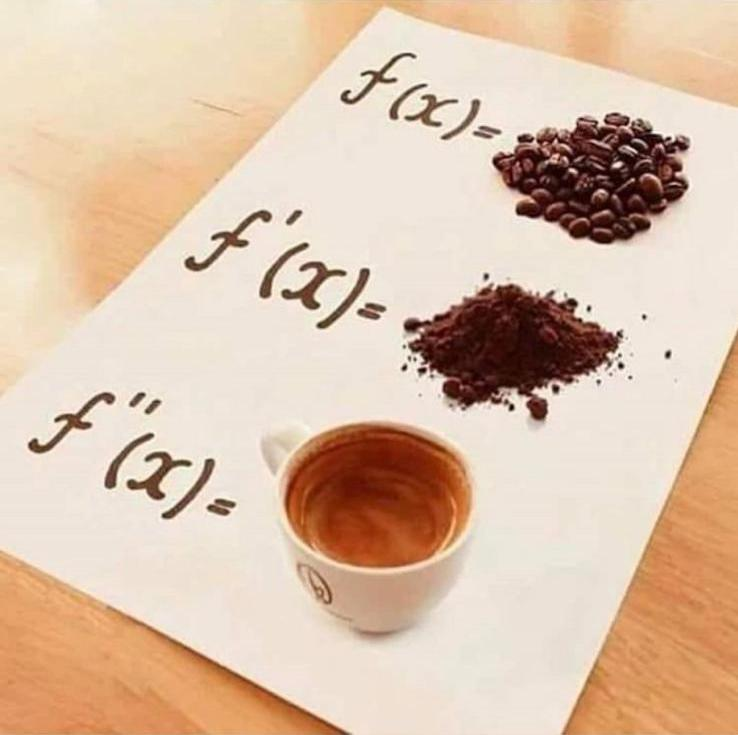

"Considering how many fools can calculate, it is surprising that it should be thought either a difficult or a tedious task for any other fool to learn how to master the same tricks.
Some calculus-tricks are quite easy. Some are enormously difficult. The fools who write the textbooks of advanced mathematics — and they are mostly clever fools — seldom take the trouble to show you how easy the easy calculations are. On the contrary, they seem to desire to impress you with their tremendous cleverness by going about it in the most difficult way.
Being myself a remarkably stupid fellow, I have had to unteach myself the difficulties, and now beg to present to my fellow fools the parts that are not hard. Master these thoroughly, and the rest will follow. What one fool can do, another can."
Despite the glowing reviews, this book was too depressing for me. The Italian award-winning Physicist author, Paolo Giordano, has a polished minimalist style that I admired, but the characters were, ultimately, so damaged, insular and cold that the book may well have been titled, "The Abject Loneliness of Dysfunctional People." [...]
The only experience that can rival reading a really great book is reading a really awful one and ripping it on goodreads; especially if, like this one, it comes with glowing recommendations. Except for some of the writing (maybe), this book had absolutely no redeeming feature. It was one of the most depressing books I have ever read, with no redemption and completely non-endearing self-involved characters who were either pathetic, sadistic, or both.
From the moment I started reading this book, I couldn't put it down; it was completely engrossing. I can't really begin to think of an accurate way to describe the depth of solitude these two people seemingly want to seek out in their lives because it comforts them. All I know is that I found myself relating on so many levels: in making stupid decisions, in feeling socially awkward, in being unable and unwilling to communicate true feelings, and in being paralyzed by fear. It was like an awakening!
This is the sort of book I always hope to find while browsing at the library, something that I've never heard of before and end up loving. To describe this book as a love story would be kind of like describing Taj Mahal as a building, apt enough but terribly inadequate.
1. Raw and real
2. Minimalistic
3. Intimate
4. Unexpected
Numerele prime sunt divizibile numai cu unu și cu ele însele. Stau la locul lor în infinita serie de numere naturale, strivite, la fel ca restul, între altele două, dar cu un pas mai încolo față de celelalte. Sunt numere bănuitoare și solitare și de aceea Mattia le găsea minunate. Uneori credea ca au ajuns din greșeală în acea secvență, că rămăseseră prinse în capcană ca niște mici perle înșirate pe un colier. Alteori, în schimb, bănuia că și lor le-ar fi plăcut să fie ca restul, numai niște numere oarecare, dar că, pentru un motiv anume, nu erau în stare. [...]
La un curs în primul an, Mattia învățase că, printre numerele prime, sunt unele și mai speciale. Matematicienii le numesc numere prime gemene: sunt perechi de numere prime care sunt aproape, de fapt, foarte aproape, pentru că între ele este mereu un număr par care le împiedică să se atingă cu adevărat. Numere ca 11 și 13, 17 și 19, 41 și 43. Dacă ai răbdarea de a merge mai departe cu numărătoarea, descoperi că aceste perechi, treptat sunt tot mai rare. Dai peste numere prime tot mai izolate, rătăcite în acel spațiu tăcut și cadențat construit numai din cifre, și ai presentimentul neliniștitor că perechile întâlnite până acolo sunt un fapt accidental, că adevăratul lor destin este de a rămâne singure. Apoi, exact când te pregătești să renunți, când nu mai ai chef să numeri, iată că dai peste alte două numere gemene, agățate strâns unul de celălalt. Printre matematicieni există convingerea comună că atât cât se poate merge mai departe, vor fi mereu altele două, chiar dacă nimeni nu poate spune unde, până când nu le descoperă.
Mattia se gândea că el și Alice erau astfel două numere prime gemene, singure și pierdute, apropiate, dar nu îndeajuns pentru a se putea atinge cu adevărat. Nu-i spusese asta niciodată. Când își imagina că-i spune aceste lucruri, stratul subțire de transpirație de pe mâinile lui se evapora complet și pentru zece minute bune nu mai era în stare să atingă niciun obiect.
2760889966649
2760889966651
1. V-ați simțit vreodată ca un număr prim?
2. Credeți în destin/suflete pereche?